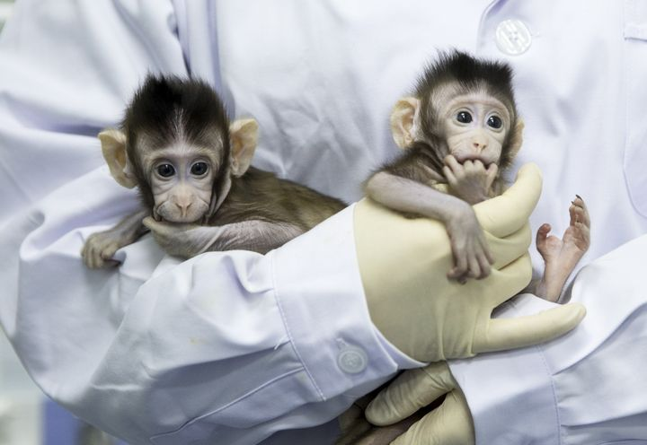

Deux singes clonés sont nés en Chine : une prouesse scientifique qui pose des questions éthiques
Deux jeunes macaques ont été créés grâce à un clonage utilisant la même technique que pour la brebis Dolly. Les chercheurs chinois espèrent pourvoir les utiliser pour la recherche médicale. Ils s’appellent Zhong Zhong et Hua Hua, ils ont respectivement huit et six semaines… Et ils sont « nés » d’un clonage, à l’Institut des neurosciences de l’Académie chinoise des sciences (CAS), à Shanghaï. Ces deux macaques crabiers ont été créés grâce à la méthode utilisée en 1996 pour la brebis Dolly, le premier mammifère cloné. CLONAGE SOMATIQUE Ils racontent leurs techniques dans un article publié dans la revue scientifique Cell. Il s’agit d’un clonage par transfert nucléaire de cellules somatiques (SCNT) : on prélève d’abord une cellule contenant l’ADN sur un macaque adulte. La cellule est implantée dans un ovocyte non fécondé, prélevé sur un autre macaque adulte. Le noyau de cet ovocyte a été retiré, il a donc été débarrassé de ses informations génétiques. Une fois le transfert effectué, le couple cellule-ovocyte est soumis à un très petit choc électrique, qui les fusionne.L’embryon ainsi obtenu est transféré dans l’utérus de la mère porteuse. Le nouveau-né aura le même ADN que le premier macaque adulte. Ce n’est pas la première fois que des primates ont été clonés : en 1999 naissait le macaque réshus Tetra, créé par une méthode plus limitée, la division de l’embryon. Mais le clonage somatique, qui est utilisé depuis Dolly sur une vingtaine d’espèces animales, était plus compliqué avec les primates : c’est le premier succès de cette méthode avec des singes. Les chercheurs ont réalisé le transfert très rapidement, et surtout ont prélevé, cette fois-ci, la cellule contenant l’ADN dans le tissu fœtal. Ces cellules peuvent être cultivées dans un laboratoires, ce qui permet plus de clonage. DEUX RÉUSSITES SUR 79 EMBRYONS Les scientifiques chinois ont travaillé pendant trois ans sur le clonage somatique avant que cela fonctionne, et les deux bébés macaques sont pour l’instant en très bonne santé. Mais l’équipe de chercheurs a connu plusieurs échecs avant de réussir : seules deux réussites… sur 79 embryons créés à partir d’une cellule du foetus. Ils ont par ailleurs aussi tenté de cloner des singes à partir de cellules issues d’adultes : deux clones sont nés sur 181 embryons, et tous deux sont morts de difficultés respiratoires au bout de 30 heures. L’expérience requiert donc de nombreux animaux : les scientifiques chinois ont utilisé des douzaines de mères porteuses pour réaliser cette étude, chacune coûtant environ 50 000 dollars. Coûteuse, et complexe techniquement, cette méthode de clonage est difficile à mettre en place. Mais les chercheurs chinois espèrent tout de même que leur technique de clonage va pouvoir être réutilisée, d’abord pour étudier la structure biologique des primates, mais aussi pour faire avancer la recherche médicale.